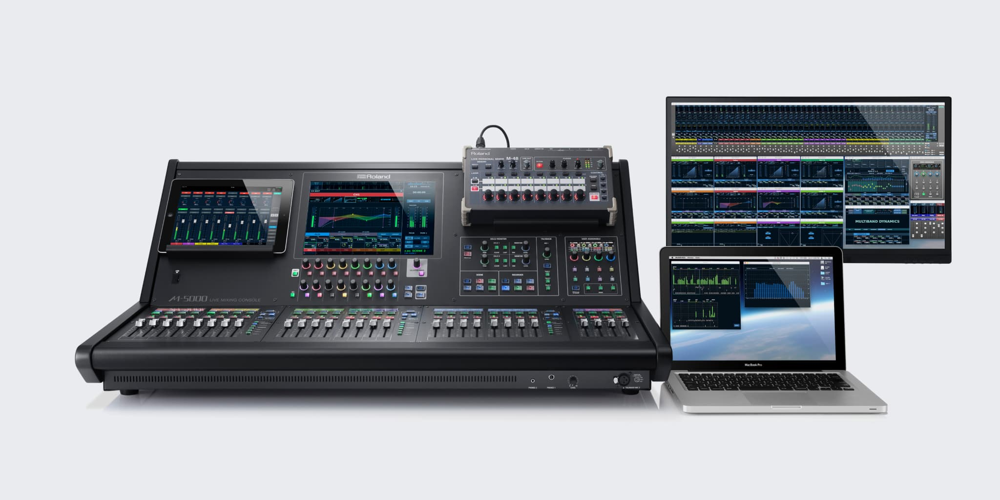
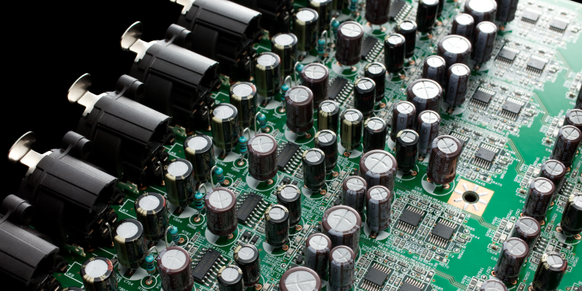
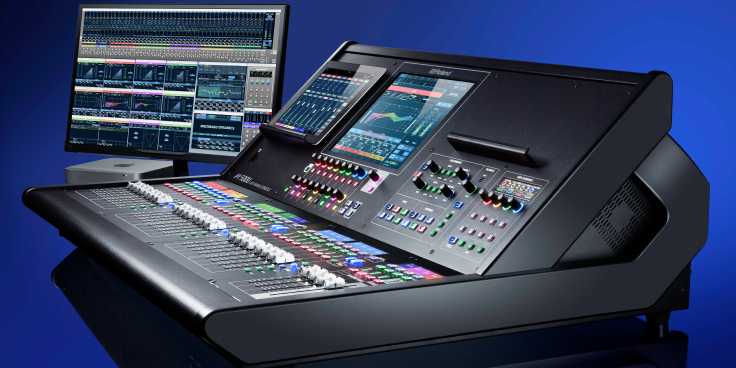
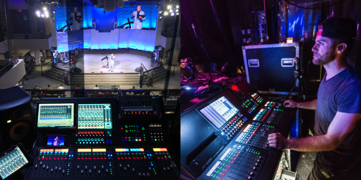
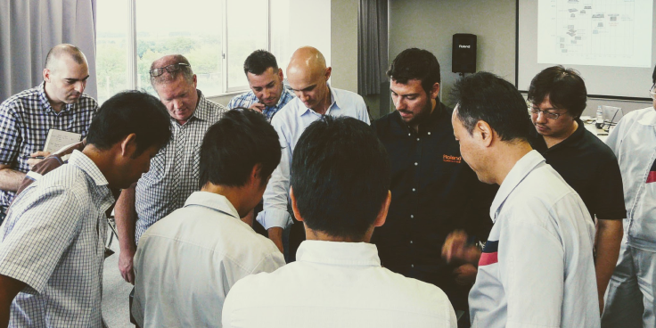
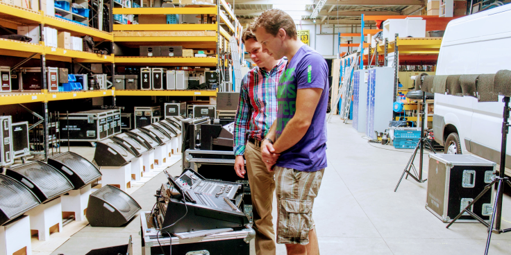

2008年に工学部を卒業し、新卒の楽器メーカーでは業務用音響機器の新規事業に配属され、ハードウェアエンジニアとして働いていました。
AppleがiPadを発表したときに、新しいプロダクトの仕様を検討するためにUIデザインおよびプロダクトマネジメントを任されました

Roland M-5000は300入力/296出力可能なプロフェッショナル向けのデジタルミキサー（ライブ用音響システム）です。M-5000は巨大なデジタル音響システムであるため、周辺機器やラインナップの開発を含めて2008年から2016年まで携わっていました。
iPadアプリケーション、PCアプリケーションのプロダクトマネジメント、UIデザインおよびすべての仕様をまとめた取扱説明書（300ページ）の執筆などを担当しました。

この新規事業が特徴的だった部分に、USのプロテスタント系の教会に受け入れられたことが挙げられます。ヨーロッパ圏やアジアでは純粋なプロ用のツールとしてふるまいつつ、すこし仕様やUIに工夫を加えるだけで、教会のボランティアでも使えるような機材に変貌することに、デジタルプロダクトの魅力を感じました。

海外の合弁会社のマネージャーや、音響のスペシャリストからヒアリングをして、製品仕様を決めていました。

オランダとベルギーに出張したとき、「地球の裏側に住んでいる人が、自分のデザインをこんなに待ち望んでいるんだ！」と感じた経験は、未だに忘れられません。